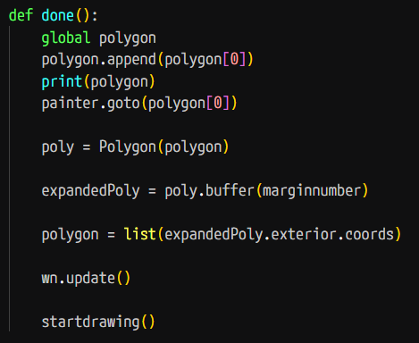
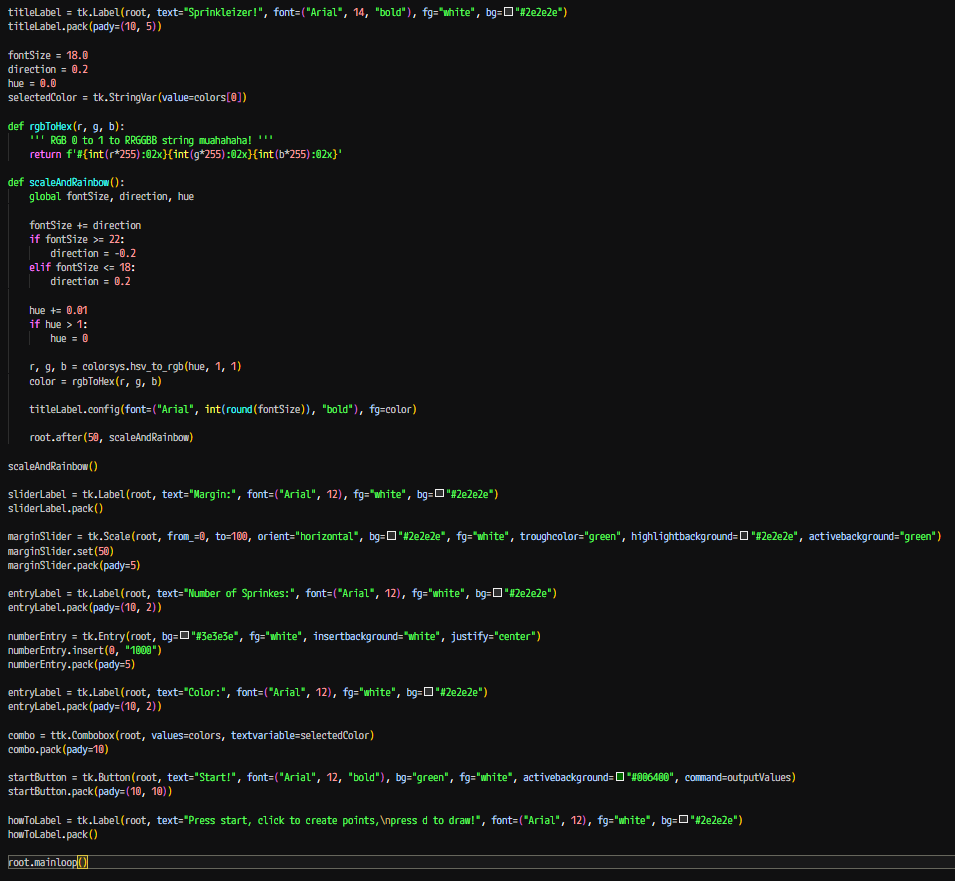
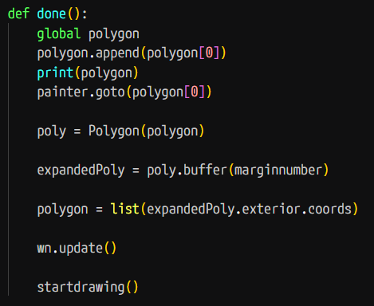
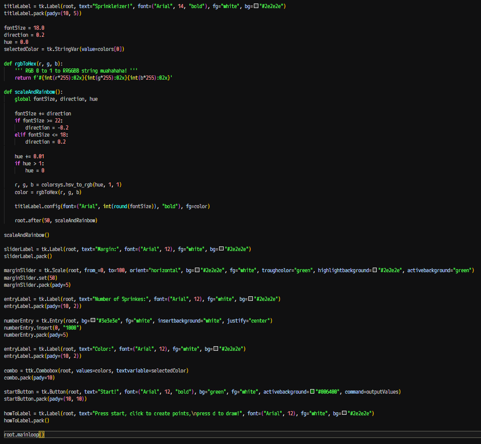
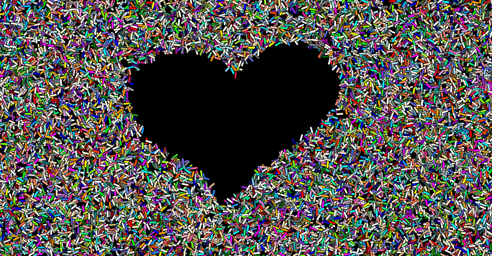
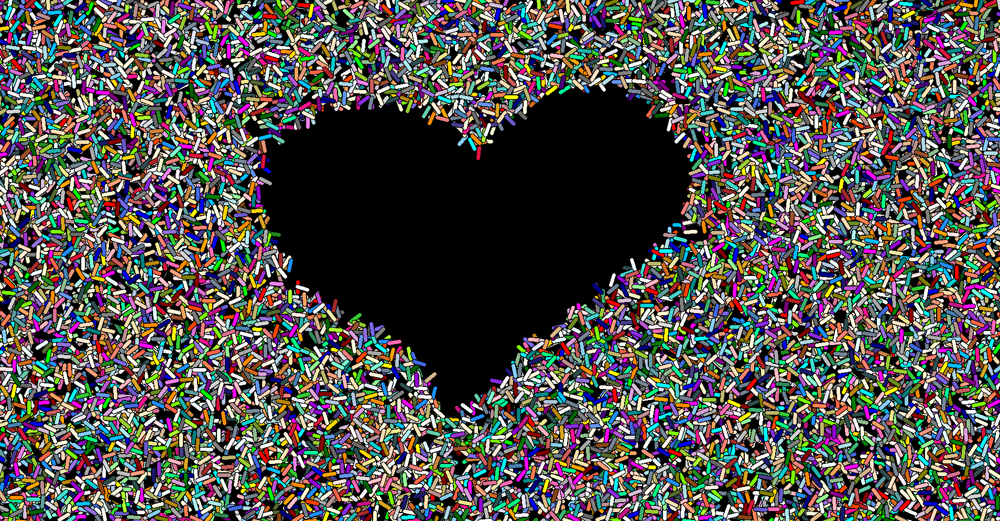

Sprinkleizer
Status: Completed
7/31/2025
Today, I was bored at work. The shop guys were backed up with too many projects to count, and its the end of the month so we cant start any new designs anyways. This led me to reopen Python for the first time in probably close to 6 months, and make a more "polished" variation on the sprinkle program that I challenge myself to write in every language I learn. I present to you... SPRINKLEIZER!
 The text changes color and changes in size, shrinking and enlarging, though its the end of the day and frankly, I could not be bothered to make an agif for it. Anyhow, here are some details:
I used Python turtle for the sprinkling, using random to make random points with random colors at random positions with random angles. When this script starts, I take mouse position and store points into a list, which get joined to make a shape. Then, using the best library ever, shapely, I took those points and offset them slightly. Then, I checked whether or not the sprinkle that I am currently drawing is within this shape with some simple math:
The text changes color and changes in size, shrinking and enlarging, though its the end of the day and frankly, I could not be bothered to make an agif for it. Anyhow, here are some details:
I used Python turtle for the sprinkling, using random to make random points with random colors at random positions with random angles. When this script starts, I take mouse position and store points into a list, which get joined to make a shape. Then, using the best library ever, shapely, I took those points and offset them slightly. Then, I checked whether or not the sprinkle that I am currently drawing is within this shape with some simple math:
 Shapely:

I also made a Tkinter interface, in a separate script, which is the main menu, and I interfaced it with the main graphical script. It has all of the settings that I could bear to reference, such as the margin (shapely), number of sprinkles, and background color (tkinter combobox to get a appealing dropdown).
Tkinter code:

Shapely:

I also made a Tkinter interface, in a separate script, which is the main menu, and I interfaced it with the main graphical script. It has all of the settings that I could bear to reference, such as the margin (shapely), number of sprinkles, and background color (tkinter combobox to get a appealing dropdown).
Tkinter code:

 It turned out pretty cool, nothing to be proud of, but it was succesful in killing a few hours of my time.

Check it out on Github!
It turned out pretty cool, nothing to be proud of, but it was succesful in killing a few hours of my time.

Check it out on Github!